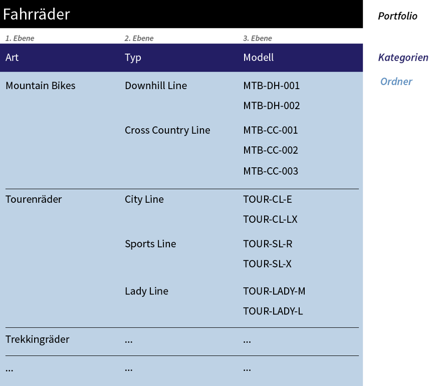

Portfolio fundamentals¶
A portfolio is a hierarchical structure that you can freely define. You can create and manage different types of portfolios. A portfolio consists of different elements:
The “Portfolio” object is the container in which all other subelements are created.
Categories: A category classifies the respective hierarchy level. Exactly one category is assigned to each hierarchy level.
Folders are the content elements of a hierarchy level. Any number of folders can be in each level.
The figure Example of a product portfolio. shows a product portfolio example with bicycles:

Example of a product portfolio.